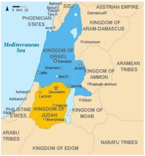
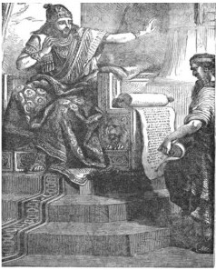
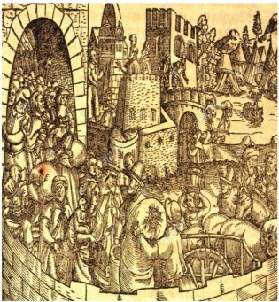

Ruler in Judah (South)
The Seductress Jezebel (or Cleopatra?)
0868 Ahab (868-850) associates with Phoenicians, marries Jezebel, builds a temple to Baal, and, worst of all, expropriates farmers - becoming thereby very unpopular. The Omride dynasty gains a reputation for economic and social injustice (Naboth Vineyard). The cities - Shechem and Samaria are prosperous and inclusive (Liberal), but the countryside is poor and Yahwist (Fundamentalist). Yahwist prophets’ condemnation of the apostasy of Israel and Jezebel is clearly the work of later pro-Judean compilers who, oversimplifying and exaggerating, project exclusive Yahwism and the primacy of Jerusalem back into earlier times. Foreign wives are the supposed source of palace apostasy. The Samarian temple to Baal provides foreign traders and diplomats a place to worship, but is a source of competition with exclusive Yahwism, and so must be shunned. Elijah incites the crowd to murder the prophets of Baal (1Kgs 18:40). Ahab is a co-leader of the anti-Assyrian coalition. The names of Judah and Edom are absent from the list of supporters (perhaps they were subsumed under Israel at the time). There are no archeological remains from the (supposedly grand) Solomonic Jerusalem to equal Ahab’s temple to Baal, or the fortifications of Megiddo, Jezreel, or Hazor.
~0850 Prophetic narratives in conflict: In the Elijah stories: (Widow of Zarephath, The Challenge to Baal, Mount Horeb, The Vineyard of Naboth, Ahaziah, Ascension into Heaven, Elijah as a harbinger of the Messiah in Malachi), Israel is supreme, Baal worship is widespread, Jezebel is the chief villain, and there is conflict with Yahwist prophets. In the Elisha stories (Adoption by Elijah, Elijah’s Ascension, Defeating the Moabites, Killing the Mocking Children, Multiplying the Widow’s Oil, Resurrection of the Child of Shunem, Healing of the Syrian Naaman, Making Iron Float), Israel is weak, Yahwism is strongly supported, Israel is on good terms with Yahwist prophets, and miraculous deeds are performed. The Ben-Hadad stories (three battles between Syria and Israel) are expanded to give Yahwist prophets center stage, and emphasize Jehoshaphat’s loyalty to YHWH.
Elijah resurrects the son of the Widow of Zarephath
0850 Ahaziah (of Israel) (850-849) Ahab is succeeded by his son Ahaziah, who is refused participation in Jehoshaphat’s maritime venture.
0849 Jehoram (849-842) Ahaziah (of Israel) dies childless, so Ahab’s sister Athaliah marries Jehoram, son of Jehoshaphat, the two royal families are joined, and Israel and Judah reunite! This is, however, a period of rapid decline for both kingdoms. Jehoram’s Moabite Campaign is retold to give center stage to Elisha, and again emphasize Jehoshaphat’s piety - folk themes with numerous miraculous circumstances, which are ignored in Chron, except to treat of Jehoshaphat, and blame the failure of his maritime venture on cooperation with Israel. Chron deems Jehoram's alliance with Ahab in the north as responsible for his defeat in war, plague, and early death, all which extend into the reigns of Ahaziah and Athaliah. All three are related to Ahab, adopt Ahabic Baalism, die horrible deaths, and are denied burial in the royal cemetery.
0842 Ahaziah (of Judah) is a pawn of his mother, Athaliah, daughter of Ahab and Jezebel and granddaughter of Omri. He is killed either by Jehu (G2K) or Hazael (Tel Dan Stele).
0842 Athaliah is the only non-Davidic ruler, woman, and foreigner to sit upon Judah’s throne. Wife of King Jehoram through a foreign alliance with her father King Ahab of Israel, she takes the throne upon the death of her son Ahaziah, and consolidates her power by assassinating the remaining members of the Davidic line. However, Jehoshabeath, Jehoram's daughter, rescues her infant nephew Joash and hides him in the temple for six years with her husband Jehoiada the priest, thus preserving the Davidic line.
0842 Joash, under the tutelage of Jehoiada the priest, carries out needed temple repairs, but after Jehoiada’s death, Joash lapses into apostasy (contrary to 2K12) and is assassinated in his bed by his servants, a victim of Chron's idea of retributive justice.
0839 Jehu (839-822) The Jehu Dynasty: According to G2K, Jehu, urged on by the prophet Elisha, kills Jehoram and Jezebel, then hosts a “feast” for the prophets of Baal whereat he massacres them, though in the Tel Dan Stele Hazael of Syria claims to have killed Jehoram and Ahaziah (of Judah), so that both Jehu in Samaria and Athaliah in Jerusalem seem to have come to power in the political upheaval caused by Hazael. Assyria then becomes active again and saves both Israel and Judah from further attacks by Hazael. A problem for the compilers is that YHWH is expected to give victory to those that support him, but Jehu was powerless before Hazael, and Jeroboam II overshadows his Yahwist Judean contemporary Uzziah. Furthermore, the Elisha stories from the Omride period fit the Jehu period better. Chronicles, on the other hand, completely ignores Israel, gives Levites important roles, and praises pro-Yahwist kings. The prophets Hosea and Amos emerge. During the Jehu Century, Israel and Judah submit to Syria and Assyria (according to the Black Obelisk).
800 Amaziah also starts off well, but sinks into apostasy (again contrary to 2 Kings 14) by rejecting the word of the prophet, and suffers military defeat and assassination. For Chron, defeat proves guilt.
0788 Jeroboam II (788-748), restores Israel’s borders and participates in the Assyrian economic realm, but as Assyria declines, the wealthy upper class of Israel intensifies its predations on the weak.
0785 Uzziah (785-760) rules Judah under the shadow of Jeroboam II. He remains on good terms with the temple priests for the first part of his reign, but Chron ascribes to him the cultic offense of burning incense (?), punished by leprosy, banishment from the temple, and burial in a field. The prophet Amos is on the spot to point the finger of blame.
0746 Zechariah - Shallum - Menahem (746-738) Zechariah is murdered by Shallum, a captain of his army, who takes the throne, thus ending the Jehu Dynasty. Shallum is then deposed by Menahem, an ally of Assyria, now dominant under Tiglath-Pileser.
0742 Jotham is a refreshing model of obedience and blessing.
0735 Ahaz - Chron has Judah sinking to its lowest point under Ahaz (according to G 2K, it was under Manasseh), because he worships foreign gods, and stops the sacrifices in the temple. In Chron, bad kings (Ahaz, Manasseh) alternate with good kings (Hezekiah, Josiah). Ahaz sacrifices a son (2K16:3) to Moloch to lift the Syro-Ephraimite siege of Jerusalem, as had the Moabite king Mesha on an earlier occasion. Ahaz, supervised by the priest Uriah without protest (2K16:10), constructs a Syrian altar, then is forced to abdicate because of health (in Chron because he worships Syrian gods). Isaiah encourages Ahaz to continue his pro-Assyrian policies, but he is hard-pressed by Rezin of Syria, the Edomites, Israelite King Pekah, and the Philistines to join the anti-Assyrian block (denounced by Micah). Isaiah supports defending Jerusalem, and letting YHWH handle the rest. In 0 734, the Assyrians return to the relief of Judea, and suppress Rezin. Ahaz, now independent of Israel, pays tribute to Tiglath-Pileser.
0734 Pekah (734-31) kills Pekakiah, and with support from Rezin, takes over part of Israel, now called Ephraim. To get Judah to join their anti-Assyrian coalition, they then attack Jerusalem, as recorded in Isaiah 7-8. Pekah is killed, and Hoshea becomes an Assyrian vassal.
0732 Hoshea (732-722) Egypt’s 25th Dynasty becomes a competitor with Assyria for dominance in the Middle East. Israelite King Hoshea buys in to the Egyptian propaganda and ceases tribute payments to Assyria. When Assyria attacks Israel, the Egyptians do not come to his aid, and Israel falls. G2K predictably blames Israel’s apostasy and failure to heed prophets for its fall. Many people are deported from Israel to Assyria and replaced with settlers from other parts of the Assyrian empire - such population exchanges were an established part of Assyrian imperial policy, a means of breaking the old power structure. The captives in Assyria are split up, quickly assimilate, and thus ten of the twelve tribes disappear. Judah remains loyal to Assyria (for the moment) and survives as an Assyrian vassal.
0727 Hezekiah (727-699) Judah recovers with much biblical glorification in G2K and Isaiah. Samaria is taken by the Assyrians, and Isaiah advises Hezekiah, king of Judah in the South, to capitulate. The Assyrians surround Jerusalem, but are mysteriously killed (plague?), and Jerusalem is saved for now. Hezekiah shows the state treasures to Merodach-baladan of Babylon, and Isaiah predicts he (Hezekiah) will be carried into Babylon. In Chron, Levites purify the temple, reinstate proper worship, and destroy local shrines; the people bring tithes, and Hezekiah and Isaiah pray together. Hezekiah grows ill because of his pride, but humbles himself, and gets better; Jerusalem is spared. Back in the real world, Sargon dies, and revolt in Assyrian lands spreads. Isaiah: I told you that Assyria was a temporary power; Hezekiah revolts; Sennacherib invades and devastates the countryside, but can’t take Jerusalem (partly due to the Siloam water tunnel). When Israel falls to Assyria (0722), Hezekiah invites the Northerners to a renewed celebration of the Passover, and, according to Chron, defends Jerusalem against Sennacherib's invading army through prayer. Overlooked by Chron are Hezekiah's surrender to Sennacherib, his trust in foreign alliances, the stripping of the temple, and Isaiah's rebuke. Judah becomes an Assyrian client state controlling the valuable olive industry.
0700 Universal dominion of YHWH is asserted by Tobit, a Naphthalian captive in 722, who preaches that the diaspora is good since it spreads worship of YHWH, and Isaiah who maintains YHWH has empowered the Assyrians and Babylonians in order to punish Israel. Isaiah also attacks corrupt officials who oppress the poor.
0698 Manasseh (698-644) is Judah's worst king, according to G2Kings: worse than Ahaz since he allowed non- Yahwist altars (as a quid pro quo for access to Assyria’s export markets?), though his reign of 55 years is the longest in Israel or Judah. He inherits a war-torn country, yet with Assyrian power now at its acme, Judah prospers.
0642 Amon undoes all the reforms of his repentant father, Manasseh. He is assassinated.

Josiah Hearing the Book of the Law
Jeremiah, the Weeping Prophet
0627-585 Jeremiah: ‘We should prosper in Babylon and pray for local government while caring about Jerusalem.’
0612 Period of Babylonian Domination - Babylonians overrun the Assyrian capital, Nineveh.
0609 Pharoah Neco leads the Egyptian and Assyrian armies out to confront the Babylonians; Josiah inexplicably comes out to confront him and is killed at Megiddo.
0609 Jehoahaz-Jehoiakim - In the difficult geopolitical situation that accompanied the decline of Assyrian hegemony, Egypt and Babylon are both vying for power. In 609 BCE, the Egyptians, hoping to bolster the crumbling Assyrians in the face of Babylonian aggression, kill Josiah, depose his son Jehoahaz, and install Jehoiakim (608-598) as a puppet king. In 605, Nebuchadnezzar defeats Egypt at Carchemish and solidifies Babylon's supremacy. Jeremiah, supported by high-ranking family and officials, endorses submission to Babylon and gives his famous temple sermon that the Jerusalem temple, like that of Shiloh, is to be destroyed. Jeremiah is thereafter barred from entering the temple.
0598 An anti-Babylonian meeting, opposed by Jeremiah but supported by the people, is held in Jerusalem including Judah, Moab, Ammon, Tyre, and Sidon. Jehoiakim decides to withhold tribute from Babylon, and to ally with a more assertive Egypt, though Pharoah Neco is only interested in access to the sea and will abandon Judah. Nebuchadrezzar captures Jerusalem (the first time), as Jehoiakim dies waiting for Egyptian help.
0598 Jehoiachin - Zedekiah - Jehoiakim’s son Jehoiachin is captured and led to Babylon with Ezekiel and leading citizens in the first Babylonian captivity. Zedekiah is placed on the throne by the Babylonians.

Babylonian Captivity
Woodcut by Jost Amman, Nurenberg circa 1570